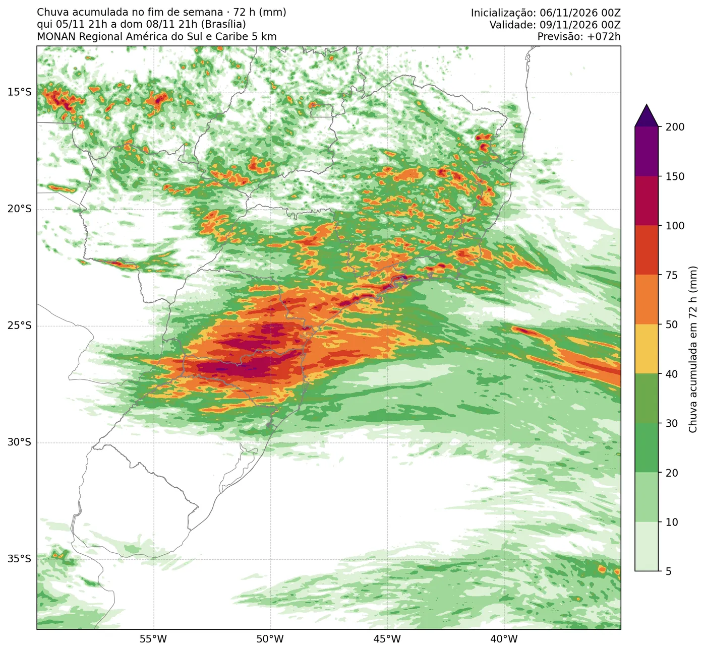

Sou meteorologista e mestrando no PGMET/CPTEC/INPE. Este site reúne meus projetos de meteorologia, feitos em Python e abertos para quem quiser usar.

Previsão/Avaliação
→
sat_goes
Em desenvolvimento
Sou meteorologista e mestrando no PGMET/CPTEC/INPE. Este site reúne meus projetos de meteorologia, feitos em Python e abertos para quem quiser usar.
